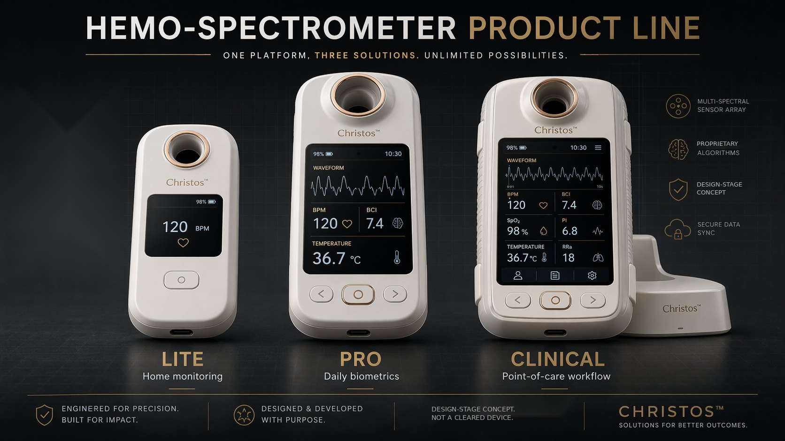
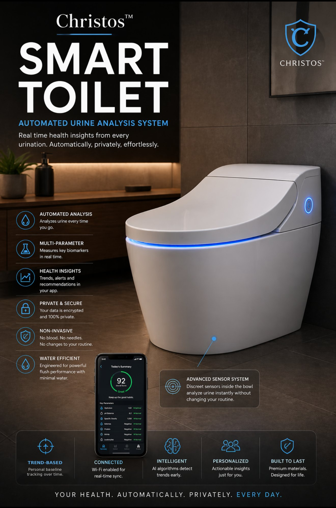
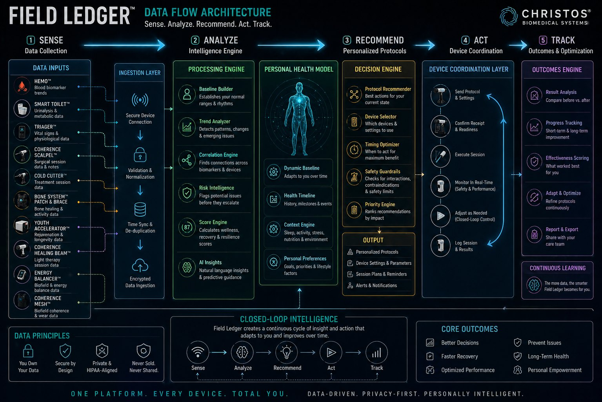
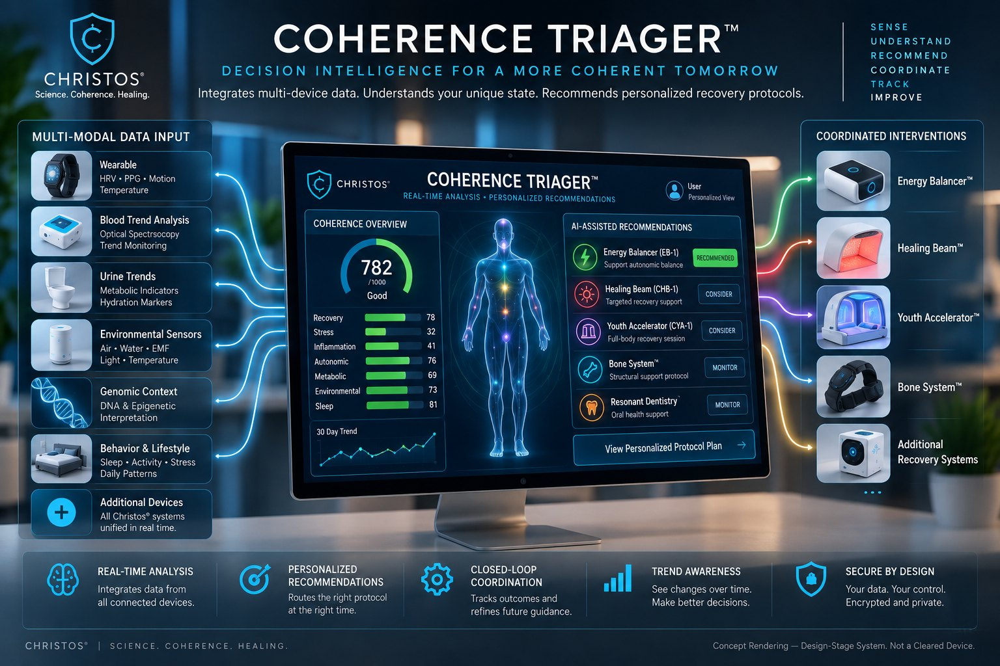
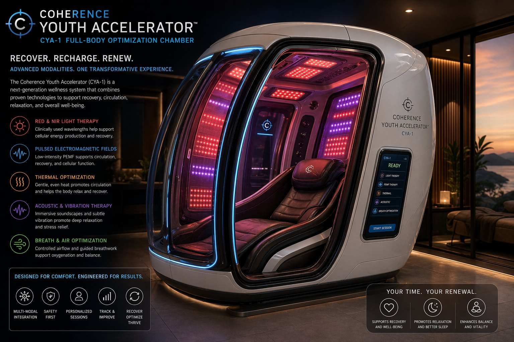
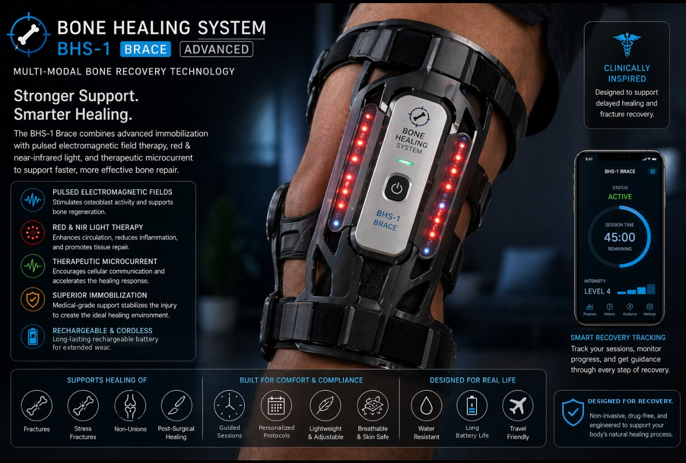
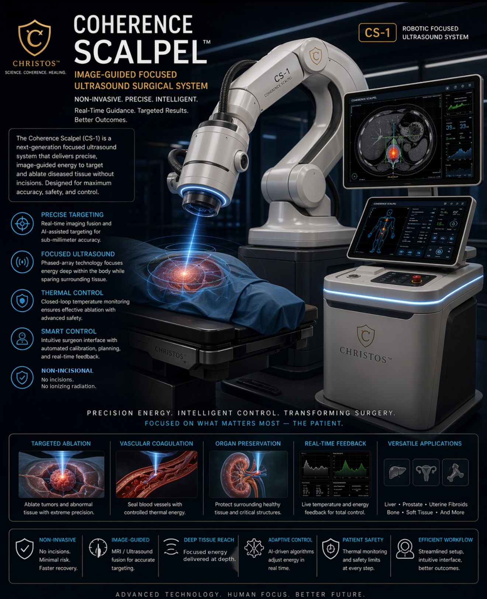
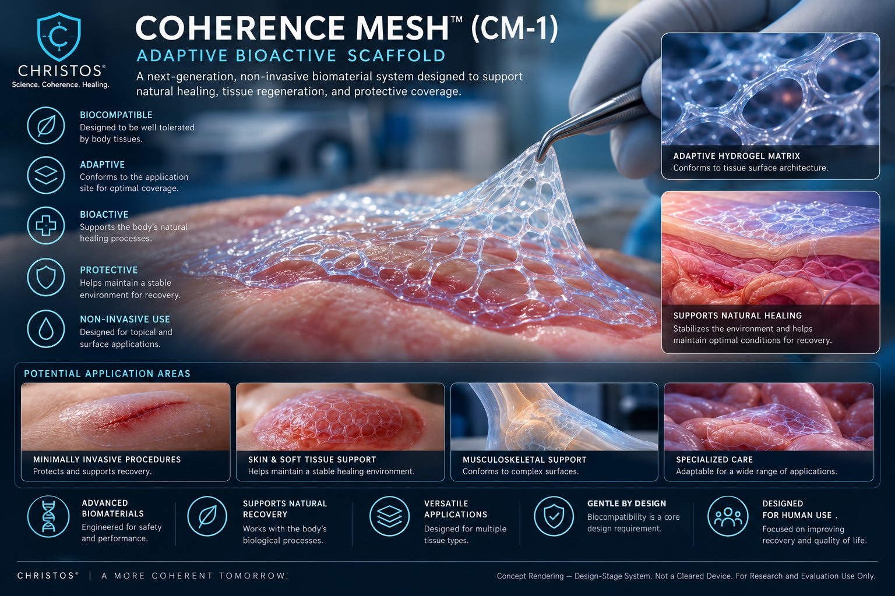
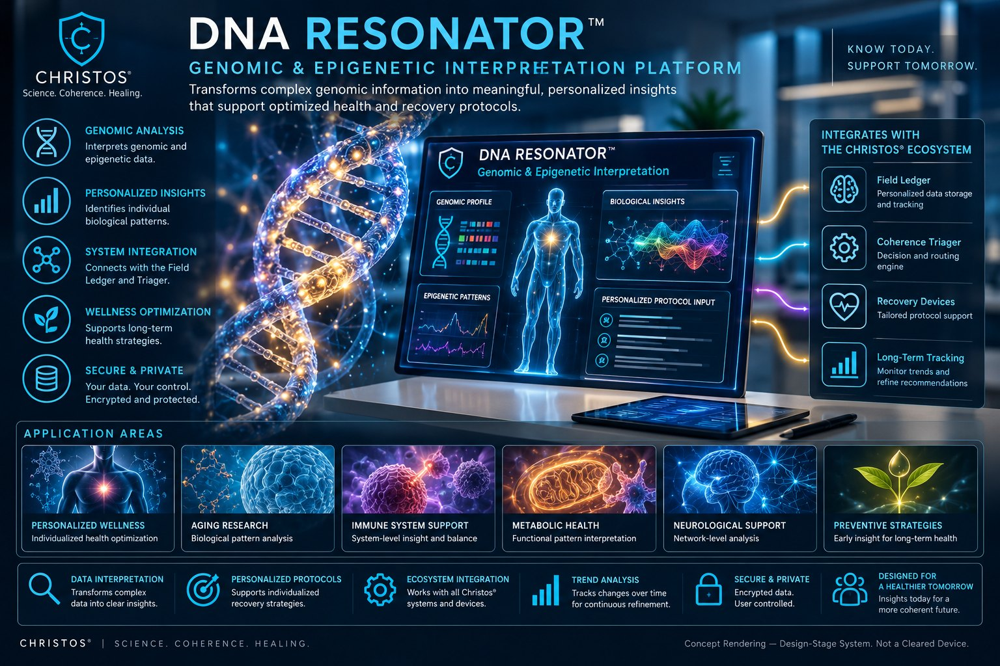

Important Notice & Clinical Disclaimer
Not FDA-approved. Not a substitute for licensed medical care. Consult a licensed physician before making any health decision. Unless explicitly stated, no device described here has received regulatory clearance from the FDA, EMA, or any other health authority. The devices span a spectrum from active prototype to design-stage concept, and are framed as a wellness, optimization, and recovery-support platform. No diagnostic or therapeutic claim is made beyond what is explicitly documented with clinical validation data. All figures are concept renderings, not photographs of built or cleared devices. The 21 Core Generator equations of the Christos® Mathematics of Reality (MoR-144) framework are permanent trade secrets and are not disclosed in this document.
Modern medicine has operated for centuries on a tacit assumption: the body is a machine, and when it breaks, the appropriate response is mechanical intervention, whether that means cutting, injecting, or irradiating. This paper presents the Christos® Non-Invasive Medicine System, a unified closed-loop platform built on an alternative premise. Coherence, not structural integrity alone, is the fundamental measurable property of biological health, and its restoration without penetrating the body is a legitimate and rigorous therapeutic model.
Seventeen integrated components span diagnostic sensing, passive monitoring, decision intelligence, and multi-modal intervention, unified by a single data architecture: Measure → Analyze → Recommend → Act → Track → Improve. Each device is grounded in an established, peer-reviewed physical or biological mechanism (photobiomodulation, HIFU, PEMF bone stimulation, bioimpedance analysis, structured water) extended through the Christos® coherence framework. Every claim is stated in falsifiable form, ranked by evidence strength, and mapped to a defined regulatory pathway. Engineering schematics, proprietary scoring algorithms, and exact formulation details are held as protected IP and available to qualified partners under signed NDA.
1. The Foundational Assumption
The interventional model treats pathology as the primary problem. Coherence medicine treats pathology as the symptom of a deeper disruption. Every standard medical intervention carries what this framework designates an inherent incoherence cost. A surgical incision creates a wound, a chemotherapy agent damages healthy cells alongside malignant ones, and a needle breaks the skin barrier. These costs are real, measurable, and largely unexamined. The system asks a different question: what if the therapeutic intervention itself carried no incoherence cost?
1.1 The Evidence for Coherence-Based Biology
The proposition that biological coherence is measurable and clinically significant draws on decades of independent peer-reviewed research: Heart Rate Variability as a validated mortality and autonomic-health index (Kleiger et al., 1987; McCraty & Shaffer, 2015); coherent biophoton emission from living cells, modulated by biological state (Popp et al., 1992); piezoelectricity in bone, collagen, fascia, and tooth enamel, the physical basis for acoustic and electromagnetic therapeutics (Fukada & Yasuda, 1957); and structured Exclusion Zone water at hydrophilic surfaces (Pollack, 2013; reviewed critically by Elton et al., 2020), the physical basis for frequency-imprinted fluids used throughout the system.
1.2 The Christos® Coherence Model
The Christos® Coherence Theory Framework (CTF v1.0) formalizes these observations: aging rate is modeled as inversely proportional to the Coherence Index (C) and proportional to a harmonic disruption term. Aging, disease, and systemic decline are treated as unified expressions of progressive coherence loss rather than independent processes, with therapeutic thresholds proposed at C ≥ 0.85 (meaningful slowing of degenerative processes) and C ≥ 0.95 (conditions supportive of active tissue regeneration).
2. The Closed-Loop System Architecture
The defining architectural feature of the system is that data does not flow in one direction from sensor to display. It flows in a continuous cycle: Measure → Analyze → Recommend → Act → Track → Improve. The Field Ledger™ (Section 6) is the system's central nervous system. It receives signals from every sensing device, constructs a personalized baseline, runs a decision engine, routes actions to intervention devices, and captures outcomes that refine future behavior.
The clinical analogy is the difference between a thermometer and a thermostat. A thermometer reports temperature; a thermostat detects deviation from baseline and coordinates a response. Most consumer health technology today is a thermometer. The Christos® system is designed to be a thermostat for the human body.
| Stage | Function |
|---|---|
| Sense | Raw physiological & environmental signal acquisition across all sensing devices |
| Ingest | Validated, timestamped data records |
| Normalize | User-relative deviation scoring against personal baseline |
| Score | Composite Recovery, Stress, and Overall health indices |
| Decide | Priority action recommendation |
| Act | Structured intervention session |
| Log & Learn | Outcome data folded back into baseline refinement |
3. The Hemo-Spectrometer™: Non-Invasive Blood Analysis
Core Innovation: Multi-spectral optical sensing of the fingertip captures blood-related physiological trend signals without a needle, lancet, or drop of blood drawn. The system does not replace laboratory blood tests. It provides continuous, longitudinal trend estimation that periodic invasive testing cannot practically offer.
The device integrates photoplethysmography, multi-wavelength spectroscopy, and contact temperature sensing across a three-tier product line (Lite, Pro, Clinical), producing a composite Blood Coherence Index (BCI, 0–1000) reflecting signal stability, perfusion quality, and inter-signal consistency. The optical foundation is the well-established Beer-Lambert relationship governing light absorbance in tissue, with dual-wavelength (red + infrared) sensing enabling ratio-based estimation methods used throughout clinical pulse oximetry.

Protected IP: Hardware & Algorithm
The Phase 2 PCB architecture, component bill of materials, and the BCI composite-scoring algorithm are proprietary to Joshua Farrior / Christos® Energy, Technology & Harmonic Design Consulting, LLC and are not disclosed in this public version.
Full Specifications Available Under Signed NDA ↗A candid limitation is stated directly in the source framework: non-invasive optical methods cannot currently match laboratory-grade blood chemistry. The device's defense is not to dispute this but to reframe the value proposition around relative trend detection, collected without behavioral friction or biological cost, distinct from and complementary to periodic lab testing.
4. The Smart Toilet™: Passive Daily Biomarker Monitoring
Core Innovation: Every person uses a toilet multiple times daily. The Smart Toilet converts this unavoidable event into a continuous, passive metabolic data stream, eliminating the single greatest barrier to continuous monitoring, which is behavioral compliance. Standard urinalysis is a clinically well-established window into hydration, kidney function, glucose regulation, and inflammatory state; the device captures the optical and electrical signatures associated with these markers in real time, without sample collection.
A ceramic sensor ring positioned within the bowl intercepts the void stream using a multi-wavelength optical array, a synchronized photodiode array, and non-contact dielectric electrodes, with a projected battery life of approximately six months per charge cycle. Outputs are expressed exclusively as trend metrics relative to the user's rolling 30-day baseline (a Hydration Index, a Metabolic Score, and anomaly flags) and are positioned explicitly as wellness trend monitoring rather than laboratory-equivalent diagnostic assay.

Protected IP: Sensor Array & Scoring Weights
The full sensor wavelength array specification and the exact composite-score weighting formulas are proprietary and are not disclosed in this public version.
Full Specifications Available Under Signed NDA ↗5. The Christos Wearable System™ (CWS-1)
The CWS-1 is the primary continuous input layer of the ecosystem. Unlike the episodic Smart Toilet and Hemo-Spectrometer, it operates continuously, providing the temporal backbone that connects every other sensing event into one physiological timeline. The Phase 1 prototype combines optical PPG, six-axis inertial motion sensing, and high-accuracy contact temperature sensing on a shared low-power sensor bus, streaming heart rate, HRV proxy, motion, skin temperature, and signal-quality data continuously.
The wearable's primary contribution to the closed loop is context. A sudden coherence-index drop means something different at 3am during sleep than at 2pm during physical activity, and the wearable's motion data provides that disambiguation for the Field Ledger's anomaly detection.
Protected IP: Circuit Design & Signal Pipeline
Component wiring, exact sensor configuration, and the firmware signal-processing pipeline are proprietary and are not disclosed in this public version.
Full Specifications Available Under Signed NDA ↗6. The Field Ledger™: Unified Intelligence Platform
The Field Ledger is not merely a database. It is the system's interpretive core. It holds a user's complete physiological history, constructs a dynamic personalized baseline via a rolling weighted average, runs correlation analysis across every input stream, and generates the protocol recommendations that coordinate device behavior. This is the difference between a collection of instruments and a medical system.
| Functional Domain | Role |
|---|---|
| Data Ingestion | Receives device packets, validates signal quality, timestamps, stores |
| Scoring Engine | Cardiovascular, Hydration, Metabolic, and Recovery composite indices |
| Triager | Rule-based decision engine mapping scores to recommended actions |
| Command Queue | Governs the lifecycle of a recommended action from proposal to completion |
| Device Registry | Tracks every connected device, firmware version, and status |
| Baseline Engine | Personalized rolling average, sample-count weighted |
| Event Log | Full reasoning trail from signal receipt through session completion |

Protected IP: Scoring Formulas & Triager Logic
The exact composite-score weighting coefficients and the Triager's complete rule-threshold logic are proprietary and are not disclosed in this public version.
Full Specifications Available Under Signed NDA ↗A key design guardrail: the Triager never recommends an intervention on low-confidence data. If signal quality falls below a defined threshold, the system routes to monitoring or sensor-repositioning guidance rather than acting, a deliberately conservative failure mode.

7. The Energy Balancer™ (EB-1)
The EB-1 is designed as the system's first demonstrable closed-loop intervention, the device that converts the platform from passive monitoring into active health coordination. It operates on established principles of transcutaneous microcurrent stimulation and bioelectrical impedance analysis (BIA), a clinically established technique for body-composition and physiological assessment. At the microcurrent level, electrical interaction with superficial tissue occurs below the threshold of muscle contraction and pain perception; published research (Cheng et al., 1982) found that low-intensity direct currents in the microampere range increased ATP concentration and protein synthesis in rat skin in vitro.
The device operates as a closed loop: electrode contact through signal acquisition, real-time impedance analysis, and stimulation parameter adjustment, with safety features including current limiting, galvanic isolation, impedance-gated activation that prevents stimulation through poor contact, and automatic thermal shutoff.
Protected IP: Circuit Architecture & Protocol Parameters
The analog front-end design, exact stimulation parameter ranges, and session protocol logic are proprietary and are not disclosed in this public version.
Full Specifications Available Under Signed NDA ↗8. The Coherence Healing Beam™ (CHB-1)
Photobiomodulation (PBM) is among the most rigorously studied non-invasive therapeutic modalities, with hundreds of peer-reviewed publications documenting cellular and tissue effects across red and near-infrared wavelengths. The CHB-1 delivers controlled PBM in a handheld consumer form factor. The biological mechanism centers on cytochrome c oxidase, the terminal enzyme in the mitochondrial electron transport chain, which has well-characterized absorption peaks in the red and near-infrared ranges (Karu, 1999); light absorption at these wavelengths modulates mitochondrial membrane potential and ATP synthesis (Hamblin & Demidova, 2006).
The device is positioned for wellness and recovery-support applications such as post-exercise recovery, temporary discomfort relief, and general tissue wellness. It is explicitly not positioned as treatment for diagnosed medical conditions. Its regulatory classification will be determined under the FDA's General Wellness policy (FDA, 2026) or, where light-based technology does not meet the policy's low-risk criteria, through 510(k) clearance.
Protected IP: Optical & Thermal Engineering
Exact wavelength, irradiance, and power specifications, the optical stack architecture, and thermal management design are proprietary and are not disclosed in this public version.
Full Specifications Available Under Signed NDA ↗9. The Coherence Youth Accelerator™ (CYA-1)
The Youth Accelerator is the highest-tier consumer device: a full-body recovery and optimization environment integrating photobiomodulation, PEMF, thermal regulation, acoustic therapy, and ergonomic positioning into a coordinated protocol guided by Field Ledger data. It is explicitly positioned as a multi-modal recovery and wellness optimization system, not an anti-aging device, with a value proposition centered on improving recovery quality and reducing stress load through modalities with established safety profiles.
Pulsed Electromagnetic Field (PEMF) therapy has existing FDA approval for specific applications, including fracture nonunion (Bassett et al., 1981) and as an adjunct to spinal fusion, and full-body photobiomodulation follows the same cytochrome c oxidase mechanism established for the CHB-1, applied systematically across major tissue regions via a multi-emitter array housed in an ergonomic chamber.

Protected IP: Emitter Array & Session Protocol
The complete emitter array specification (placement, count, and frequency assignment per body region) and the full sequential session protocol are proprietary and are not disclosed in this public version.
Full Specifications Available Under Signed NDA ↗10. The Bone Healing System™
The Bone Healing System addresses a significant unmet need: the absence of active, data-connected, non-invasive support during recovery from fracture, surgery, or structural injury. Standard of care provides immobilization, a passive mechanical solution with no feedback and no active biological support. The use of electromagnetic stimulation for bone healing has the strongest regulatory precedent of any modality in the system. Bassett et al. (1974) first demonstrated augmentation of bone repair with inductively coupled electromagnetic fields in animal studies, and the first PEMF bone growth stimulator received FDA approval for fracture nonunion in 1979, with clinical results in ununited tibial fractures published shortly after (Bassett et al., 1981). The proposed mechanism involves modulation of osteoblast calcium signaling. The piezoelectric properties of bone (Fukada & Yasuda, 1957) provide the physical basis for bidirectional electromechanical coupling: bone under load generates electrical potentials, and applied fields produce mechanical responses.
The system spans two tiers, a flexible wearable patch for the acute and chronic phase and a rigid brace integrating mechanical stabilization with multi-point stimulation for higher-acuity recovery. Both are complemented by a named structured-water mineral fluid, OsteoFlux™, delivering bone-specific minerals to the recovery site.

Protected IP: Device Specifications & OsteoFlux™ Formulation
Patch and brace hardware specifications (crystal array, coil configuration, electronics) and the complete OsteoFlux™ mineral formulation and imprinting protocol are proprietary and are not disclosed in this public version.
Full Specifications Available Under Signed NDA ↗11. Acoustic Dissolution Surgery™
The proposition that focused acoustic energy can selectively destroy pathological tissue while leaving surrounding healthy tissue intact is not speculative. It is the operating principle of High-Intensity Focused Ultrasound (HIFU), an FDA-cleared modality with demonstrated efficacy in uterine fibroid ablation (Tempany et al., 2003), prostate treatment, essential tremor, and multiple oncologic applications. HIFU uses a phased-array transducer to focus acoustic energy at a precise intracorporeal point, raising tissue temperature within a focal volume as small as roughly 1mm³ while surrounding tissue, through which the energy passes unfocused, is largely unaffected.
| Application | Mechanism | Regulatory Precedent |
|---|---|---|
| Kidney / ureteral stones | Acoustic cavitation + fragmentation | ESWL, FDA cleared 1984 |
| Uterine fibroids | Thermal ablation at focal point | MRgFUS, FDA cleared 2004 |
| Prostate tissue | HIFU zone ablation | FDA cleared 2015 |
| Essential tremor | MRgFUS thalamotomy | FDA cleared 2016 |
| DVT / thrombus | Cavitation-enhanced thrombolysis | Active clinical research |
The Christos® extension, the Resonant Selectivity Principle, proposes that pathological tissue (calcifications, cysts, malignant masses) often exhibits acoustic impedance and resonant characteristics distinct from surrounding healthy tissue, and that frequency-swept focused ultrasound can preferentially couple energy into the target at its resonant frequency, improving selectivity and potentially lowering total energy input. This principle is strongest for high-impedance-differential targets such as kidney stones, calcified plaques, and biliary calculi. The interventional platform, the Coherence Scalpel (CS-1), is a cart-based or robotic-arm system with integrated imaging guidance and real-time thermal monitoring. It is not a handheld device, reflecting the precision-targeting and cooling requirements of therapeutic-power HIFU.

Protected IP: Selectivity Formula & System Architecture
The Boundary Discrimination Index formula and the complete CS-1 transducer and system architecture are proprietary and are not disclosed in this public version.
Full Specifications Available Under Signed NDA ↗12. Resonant Dentistry™
The tooth is treated not as inert enamel and calcium but as a living piezoelectric crystal, a biological transducer converting mechanical energy to electrical signals and back. This property was established for bone by Fukada & Yasuda (1957) and confirmed for enamel, dentin, and cementum. Low-Intensity Pulsed Ultrasound (LIPUS) has the strongest evidence base for acoustic hard-tissue applications, with a published meta-analysis demonstrating significant fracture-healing acceleration (Busse et al., 2002); biomimetic hydroxyapatite has separately been shown in systematic review and meta-analysis to support remineralization and caries prevention (Limeback et al., 2021). Resonant Dentistry combines LIPUS activation with mineral delivery to create a synergistic remineralization environment across a graduated four-level intervention architecture, from daily prevention through acoustic support during necessary surgical procedures. A companion diagnostic device maps tooth-by-tooth demineralization non-invasively via acoustic impedance profiling, in place of X-ray-based early detection.
Protected IP: Protocol Parameters
Exact acoustic frequency, intensity, and session parameters for each intervention level are proprietary and are not disclosed in this public version.
Full Specifications Available Under Signed NDA ↗13. Auditory Regeneration System™
Hearing loss affects an estimated 1.5 billion people globally (WHO, 2021), and sensorineural loss remains predominantly treated compensatorily (hearing aids, cochlear implants) rather than regeneratively. The Christos® Auditory Regeneration System proposes a regenerative approach combining a named structured-water mineral fluid, AudiaFlux™, with a wearable behind-ear resonator. AudiaFlux™ is formulated around established cochlear-protective and auditory-nerve-supportive minerals, including magnesium, as demonstrated for noise-induced hearing loss prevention by Attias et al. (1994). The resonator is positioned over the mastoid bone, the same anatomical site used by bone-anchored hearing aids, and delivers acoustic and near-infrared photobiomodulation rather than sound amplification.
Protected IP: Formulation & Device Specifications
The complete AudiaFlux™ mineral formulation, resonator device engineering, and chamber protocol frequencies/timing are proprietary and are not disclosed in this public version.
Full Specifications Available Under Signed NDA ↗14. The Coherence Mesh™ (CM-1)
The Coherence Mesh is the system's most advanced biomaterials innovation: a polymer delivered as a liquid that transitions to a conformal hemostatic scaffold on contact with the biological environment at a wound site, without a needle penetrating the skin for superficial applications. Injectable and in-situ-forming hydrogel hemostats are an active area of biomaterials research, with preclinical studies demonstrating rapid sealing of high-pressure arterial and cardiac bleeding in large-animal models (Hong et al., 2019), and the underlying hemostatic principle is established across multiple approved products. Oxidized regenerated cellulose, gelatin matrix, and fibrin sealant systems all demonstrate that biodegradable scaffold materials provide effective hemostasis. The CM-1 differentiates through liquid-delivery conformability to complex wound geometries, contact-triggered (not premature) activation, and a frequency-imprinted base intended to support biological integration.

Protected IP: Delivery System Specification
The precursor formulation, activation chemistry, and complete delivery system engineering specification are proprietary and are not disclosed in this public version.
Full Specifications Available Under Signed NDA ↗15. The DNA Resonator™
The DNA Resonator is best understood as a data-interpretation and personalization engine rather than a direct biological instrument. It integrates genomic sequencing data, obtained through standard external methods, with real-time physiological signals from the Field Ledger to model how an individual's genetic predispositions interact with their current environmental and behavioral context. This draws the critical distinction between static DNA sequence and dynamic, modifiable epigenetic expression (Bird, 2002; Jaenisch & Bird, 2003). For non-invasive tissue characterization, the platform uses near-field Raman spectroscopy, an established technique for generating a molecular spectral fingerprint of superficial tissue without contact or sample preparation (Hanlon et al., 2000).
All outputs are explicitly framed as probabilistic tendencies and personalization parameters (predisposition indicators, response-likelihood estimates, and protocol weighting), never as deterministic diagnosis. The device does not claim to diagnose genetic conditions, predict specific disease outcomes, or alter gene expression.

16. Validation & Falsifiability
The system is designed from the ground up to be falsifiable, since a system that cannot fail a test has no scientific validity. Six primary claims define the Phase 1 validation program:
- Deterministic consistency: identical input produces identical score, decision, and action.
- Low-confidence guardrail: signal quality below threshold triggers monitoring or repositioning, never an intervention.
- Directional stress detection: a controlled stress event produces a directional recovery-score and stress-proxy change in the majority of valid sessions.
- Measurable intervention response: the system calculates a valid pre/post session delta.
- Repeatability: similar conditions produce similar directional response across repeated trials.
- Baseline adaptation: system thresholds update as the user's personal baseline shifts over time.
16.1 Ultra-Skeptic Analysis (Selected)
On the BCI as a metric: in its current form, BCI is an engineering metric tracking system behavior, not a validated clinical biomarker. Its value is trend detection and system responsiveness; the path to clinical legitimacy is longitudinal correlation with established metrics (HRV, SpO2, lab values) in later validation phases.
On Solfeggio and named frequencies: there is no peer-reviewed evidence that specific named frequencies alone produce the therapeutic effects sometimes attributed to them. The system uses these frequencies as organizational and framing tools within protocol architecture. The documented biological effects underlying each device are those of acoustic stimulation, photobiomodulation, and structured water generally, not of specific Hz values in isolation, and therapeutic claims tied to specific frequencies require additional dedicated validation.
On the coherence framework itself: in its full formulation, coherence spans phenomena that are separately and independently clinically recognized, including HRV coherence, biophoton coherence, EEG electrical coherence, and biochemical pathway coherence. The framework provides a unifying language for these distinct, independently evidenced phenomena; the open research question is whether a composite coherence score correlates with established biomarkers at a clinically useful level.
16.2 Regulatory Pathway by Device Class
| Device Class | Pathway |
|---|---|
| Wellness devices (EB-1, CHB-1, CYA-1, CWS-1) | Candidates for the FDA General Wellness policy (FDA, 2026), subject to low-risk determination; stimulation, PEMF, or light-based components may instead require 510(k) clearance |
| Smart Toilet, Hemo-Spectrometer | General Wellness scope for trend-only outputs; otherwise 510(k) or De Novo, depending on predicate availability |
| Bone System, Resonant Dentistry | Predicate technologies exist (PEMF bone growth stimulators, LIPUS); these have historically required PMA, so the pathway may be PMA or 510(k) depending on current FDA classification |
| Coherence Scalpel (CS-1) | PMA; Class III, 3–7 year timeline, full clinical trial data required |
| Coherence Mesh (CM-1) | 510(k), De Novo, or PMA depending on final composition; possible combination-product review |
17. Market & Investment Overview
The system sits at the convergence of four high-growth markets: digital health platforms, wearable technology, recovery and wellness technology, and non-invasive medical devices. Together they form a combined multi-hundred-billion-dollar opportunity space growing at double-digit annual rates. The most important competitive claim is category creation rather than product superiority. No existing competitor offers a closed-loop, multi-device, non-invasive health coordination platform: wearable makers offer measurement without intervention coordination, single-modality devices offer intervention without a data layer, and clinical HIFU systems offer targeted intervention without continuous monitoring or a consumer tier.
| Phase | Timeline | Investment |
|---|---|---|
| Phase 1: Core Loop Validation | 0–6 months | $250,000 |
| Phase 2: Data Expansion | 6–18 months | $500,000 |
| Phase 3: Clinical Integration | 18–30 months | $1,000,000 |
| Phase 4: Advanced Systems | 30–60 months | $5,500,000 |
| Total Program | 5 years | $7,250,000; projected $500M+ revenue potential, first 5 commercial years |
Intellectual property protection currently rests on two foundations: the Christos® trademark, registered on the USPTO Principal Register, and trade-secret protection for all engineering, algorithmic, and formulation details, which are disclosed only under signed NDA. Patent protection on specific implementations is pursued jointly with development partners once a design reaches late-stage development. The closed-loop coordination architecture, in which sensing devices connected to a central decision engine coordinate intervention devices in continuous feedback, is a foundational design principle shared across the Christos® portfolio, and its implementation details remain protected as trade secrets.
18. Synthesis & Conclusion
Every device in this system was designed to answer one question: what does medicine look like when we refuse to accept that healing requires harming? Acoustic Dissolution Surgery is proposed in place of the scalpel; Resonant Dentistry in place of the drill; the Coherence Mesh in place of open surgical exposure for hemorrhage control; the Bone System as active field support in place of passive immobilization alone; the Hemo-Spectrometer in place of routine phlebotomy. The claim is not about any single device. It is a claim about the architecture of medicine itself: that every point at which modern medicine currently requires penetrating the body can be approached, and in some cases substantially replaced, by a coherence-based non-invasive equivalent.
18.1 The Coherence Theory of Disease: Three Axioms
The CTF v1.0 framework unifying all seventeen components rests on three axioms. First, consciousness modulates coherence (the informational field an organism is embedded in is not separable from its biological state). Second, phi is the universal stability constant governing self-organizing geometry from molecular to systemic scales. Third, time is primary and space is emergent: temporal coherence (rhythm, cadence, cellular oscillation) must stabilize before spatial and structural coherence can organize around it. Each device portfolio addresses one or more of these three restoration targets.
Closing
The 100-year vision is a medicine in which the question "what did the doctor do to you?" has been replaced by "what conditions did the system create so your body could heal itself?" That vision requires devices, software, data architecture, and mathematical frameworks. Above all, it requires a different foundational assumption about what the human body is capable of when its coherence is restored. Christos®. Engineered for Health. Designed for Life.
References
Kleiger RE, Miller JP, Bigger JT Jr, Moss AJ. Decreased heart rate variability and its association with increased mortality after acute myocardial infarction. Am J Cardiol. 1987;59(4):256-262.
McCraty R, Shaffer F. Heart rate variability: new perspectives on physiological mechanisms, assessment of self-regulatory capacity, and health risk. Glob Adv Health Med. 2015;4(1):46-61.
Popp FA, Li KH, Gu Q, eds. Recent Advances in Biophoton Research and its Applications. Singapore: World Scientific; 1992.
Fukada E, Yasuda I. On the piezoelectric effect of bone. J Phys Soc Jpn. 1957;12(10):1158-1162.
Pollack GH. The Fourth Phase of Water: Beyond Solid, Liquid, and Vapor. Seattle: Ebner & Sons; 2013.
Elton DC, Spencer PD, Riches JD, Williams ED. Exclusion zone phenomena in water: a critical review of experimental findings and theories. Int J Mol Sci. 2020;21(14):5041.
Cheng N, Van Hoof H, Bockx E, et al. The effects of electric currents on ATP generation, protein synthesis, and membrane transport in rat skin. Clin Orthop Relat Res. 1982;(171):264-272.
Karu T. Primary and secondary mechanisms of action of visible to near-IR radiation on cells. J Photochem Photobiol B. 1999;49(1):1-17.
Hamblin MR, Demidova TN. Mechanisms of low level light therapy. Proc SPIE. 2006;6140:614001.
Bassett CA, Pawluk RJ, Pilla AA. Augmentation of bone repair by inductively coupled electromagnetic fields. Science. 1974;184(4136):575-577.
Bassett CA, Mitchell SN, Gaston SR. Treatment of ununited tibial diaphyseal fractures with pulsing electromagnetic fields. J Bone Joint Surg Am. 1981;63(4):511-523.
Tempany CM, Stewart EA, McDannold N, et al. MR imaging-guided focused ultrasound surgery of uterine leiomyomas: a feasibility study. Radiology. 2003;226(3):897-905.
Busse JW, Bhandari M, Kulkarni AV, Tunks E. The effect of low-intensity pulsed ultrasound therapy on time to fracture healing: a meta-analysis. CMAJ. 2002;166(4):437-441.
Limeback H, Enax J, Meyer F. Biomimetic hydroxyapatite and caries prevention: a systematic review and meta-analysis. Can J Dent Hyg. 2021;55(3):148-159.
Attias J, Weisz G, Almog S, et al. Oral magnesium intake reduces permanent hearing loss induced by noise exposure. Am J Otolaryngol. 1994;15(1):26-32.
Hong Y, Zhou F, Hua Y, et al. A strongly adhesive hemostatic hydrogel for the repair of arterial and heart bleeds. Nat Commun. 2019;10:2060.
Bird A. DNA methylation patterns and epigenetic memory. Genes Dev. 2002;16(1):6-21.
Jaenisch R, Bird A. Epigenetic regulation of gene expression: how the genome integrates intrinsic and environmental signals. Nat Genet. 2003;33 Suppl:245-254.
Hanlon EB, Manoharan R, Koo TW, et al. Prospects for in vivo Raman spectroscopy. Phys Med Biol. 2000;45(2):R1-R59.
U.S. Food and Drug Administration. General Wellness: Policy for Low Risk Devices. Guidance for Industry and Food and Drug Administration Staff. January 6, 2026.
World Health Organization. World Report on Hearing. Geneva: WHO; 2021.
A complete bibliography is maintained in the full internal edition of this paper.
© 2026 Joshua Farrior · Christos® Energy, Technology & Harmonic Design Consulting, LLC · All Rights Reserved · Business ID: 202511071941923 · Christos® trademark registered on the USPTO Principal Register · The Christos® Non-Invasive Medicine System and all named devices are original framework contributions of Joshua Farrior · All figures are concept renderings · christosenergy.com